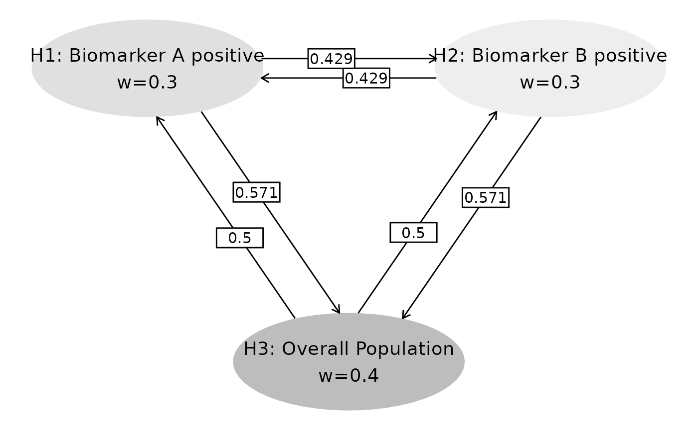

Procedure to compute p-value boundaries by weighted Bonferroni
Yujie Zhao
Source:vignettes/tech-detail-wb.Rmd
tech-detail-wb.RmdExample overview
In a 2-arm controlled clinical trial example with one primary endpoint, there are 3 patient populations defined by the status of two biomarkers A and B:
- biomarker A positive,
- biomarker B positive,
- overall population.
The 3 primary elementary hypotheses are:
- \(H_1\): the experimental treatment is superior to the control in the biomarker A positive population;
- \(H_2\): the experimental treatment is superior to the control in the biomarker B positive population;
- \(H_3\): the experimental treatment is superior to the control in the overall population.
Assume an interim analysis and a final analysis are planned for the study and the number of events are listed as
k <- 2 # Number of total analysis
n_hypotheses <- 3 # Number of hypothesesObserved p-values
obs_tbl <- tribble(
~hypothesis, ~analysis, ~obs_p,
"H1", 1, 0.02,
"H2", 1, 0.01,
"H3", 1, 0.006,
"H1", 2, 0.015,
"H2", 2, 0.012,
"H3", 2, 0.004
) %>%
mutate(obs_Z = -qnorm(obs_p))
obs_tbl %>%
gt() %>%
tab_header(title = "Nominal p-values")| Nominal p-values | |||
| hypothesis | analysis | obs_p | obs_Z |
|---|---|---|---|
| H1 | 1 | 0.020 | 2.053749 |
| H2 | 1 | 0.010 | 2.326348 |
| H3 | 1 | 0.006 | 2.512144 |
| H1 | 2 | 0.015 | 2.170090 |
| H2 | 2 | 0.012 | 2.257129 |
| H3 | 2 | 0.004 | 2.652070 |
Information fraction
alpha <- 0.025
event_tbl <- tribble(
~population, ~analysis, ~event,
"A positive", 1, 80,
"B positive", 1, 88,
"AB positive", 1, 64,
"overall", 1, 180,
"A positive", 2, 160,
"B positive", 2, 176,
"AB positive", 2, 128,
"overall", 2, 360,
)The information fraction of \(H_1\), \(H_2\), \(H_3\) at IA is
IF_IA <- c(
((event_tbl %>% filter(analysis == 1, population == "A positive"))$event + (event_tbl %>% filter(analysis == 1, population == "overall"))$event) /
((event_tbl %>% filter(analysis == 2, population == "A positive"))$event + (event_tbl %>% filter(analysis == 2, population == "overall"))$event),
((event_tbl %>% filter(analysis == 1, population == "B positive"))$event + (event_tbl %>% filter(analysis == 1, population == "overall"))$event) /
((event_tbl %>% filter(analysis == 2, population == "B positive"))$event + (event_tbl %>% filter(analysis == 2, population == "overall"))$event),
((event_tbl %>% filter(analysis == 1, population == "AB positive"))$event + (event_tbl %>% filter(analysis == 1, population == "overall"))$event) /
((event_tbl %>% filter(analysis == 2, population == "AB positive"))$event + (event_tbl %>% filter(analysis == 2, population == "overall"))$event)
)
IF_IA## [1] 0.5 0.5 0.5Initial weight and transition matrix
We assign the initial weights of \(H_1\), \(H_2\), \(H_3\) as \(\left(w_1(I), w_2(I), w_3(I) \right) = (0.3, 0.3, 0.4).\) And its multiplicity strategy is visualized in below. If \(H_1\) is rejected, then \(3/7\) local significance level \(\alpha_1\) will be propagated to \(H_2\), and \(4/7\) will go to \(H_3\). If \(H_3\) is rejected, then half of \(\alpha_3\) goes to \(H_1\), and half goes to \(H_2\).
m <- matrix(c( # Transition matrix
0, 3 / 7, 4 / 7,
3 / 7, 0, 4 / 7,
1 / 2, 1 / 2, 0
), nrow = 3, byrow = TRUE)
w <- c(0.3, 0.3, 0.4) # Initial weights
name_hypotheses <- c(
"H1: Biomarker A positive",
"H2: Biomarker B positive",
"H3: Overall Population"
)
hplot <- gMCPLite::hGraph(
3,
alphaHypotheses = w, m = m,
nameHypotheses = name_hypotheses, trhw = .2, trhh = .1,
digits = 5, trdigits = 3, size = 5, halfWid = 1, halfHgt = 0.5,
offset = 0.2, trprop = 0.4,
fill = as.factor(c(2, 3, 1)),
palette = c("#BDBDBD", "#E0E0E0", "#EEEEEE"),
wchar = "w"
)
hplot
# Get weights for all intersection hypotheses
graph <- gMCPLite::matrix2graph(m)
graph <- gMCPLite::setWeights(graph, w)
# Set up hypothetical p-values (0 or 1) to obtain all combinations
pvals <- NULL
for (i in 1:n_hypotheses) {
if (i == 1) {
pvals <- data.frame(x = c(0, 1))
names(pvals) <- paste("pval_H", i, sep = "")
} else {
tmp <- data.frame(x = c(0, 1))
names(tmp) <- paste("pval_H", i, sep = "")
pvals <- merge(pvals, tmp)
}
}
# Get the weights for each intersection hypothesis
inter_weight <- NULL # Create an empty table to store the weight of interaction hypotheses
for (i in seq_len(nrow(pvals))) { # Each row in `pvals` is 1 possible interaction hypothesis
pval_tmp <- as.numeric(pvals[i, ])
graph_tmp <- gMCPLite::gMCP(graph = graph, pvalues = pval_tmp, alpha = alpha)
weight_tmp <- gMCPLite::getWeights(graph_tmp)
inter_weight <- dplyr::bind_rows(inter_weight, weight_tmp)
}
inter_weight <- replace(inter_weight, pvals == 0, NA) # Replace the empty hypothesis as NA
inter_weight <- inter_weight[-1, ] # Delete the first row since it is empty set
inter_weight %>%
gt() %>%
tab_header("Weight of all possible interaction hypothesis")| Weight of all possible interaction hypothesis | ||
| H1 | H2 | H3 |
|---|---|---|
| 1.0000000 | NA | NA |
| NA | 1.0000000 | NA |
| 0.5000000 | 0.5000000 | NA |
| NA | NA | 1.0000000 |
| 0.4285714 | NA | 0.5714286 |
| NA | 0.4285714 | 0.5714286 |
| 0.3000000 | 0.3000000 | 0.4000000 |
Correlations
The correlation of the 6 statistic (2 analyses \(\times\) 3 hypotheses) are
# Event count of intersection of paired hypotheses - Table 2
# H1, H2: Hypotheses intersected.
# (1, 1) represents counts for hypothesis 1
# (1, 2) for counts for the intersection of hypotheses 1 and 2
event <- tribble(
~H1, ~H2, ~Analysis, ~Event,
1, 1, 1, event_tbl %>% filter(analysis == 1, population == "A positive") %>% select(event) %>% as.numeric(),
2, 2, 1, event_tbl %>% filter(analysis == 1, population == "B positive") %>% select(event) %>% as.numeric(),
3, 3, 1, event_tbl %>% filter(analysis == 1, population == "overall") %>% select(event) %>% as.numeric(),
1, 2, 1, event_tbl %>% filter(analysis == 1, population == "AB positive") %>% select(event) %>% as.numeric(),
1, 3, 1, event_tbl %>% filter(analysis == 1, population == "A positive") %>% select(event) %>% as.numeric(),
2, 3, 1, event_tbl %>% filter(analysis == 1, population == "B positive") %>% select(event) %>% as.numeric(),
1, 1, 2, event_tbl %>% filter(analysis == 2, population == "A positive") %>% select(event) %>% as.numeric(),
2, 2, 2, event_tbl %>% filter(analysis == 2, population == "B positive") %>% select(event) %>% as.numeric(),
3, 3, 2, event_tbl %>% filter(analysis == 2, population == "overall") %>% select(event) %>% as.numeric(),
1, 2, 2, event_tbl %>% filter(analysis == 2, population == "AB positive") %>% select(event) %>% as.numeric(),
1, 3, 2, event_tbl %>% filter(analysis == 2, population == "A positive") %>% select(event) %>% as.numeric(),
2, 3, 2, event_tbl %>% filter(analysis == 2, population == "B positive") %>% select(event) %>% as.numeric()
)
event## # A tibble: 12 × 4
## H1 H2 Analysis Event
## <dbl> <dbl> <dbl> <dbl>
## 1 1 1 1 80
## 2 2 2 1 88
## 3 3 3 1 180
## 4 1 2 1 64
## 5 1 3 1 80
## 6 2 3 1 88
## 7 1 1 2 160
## 8 2 2 2 176
## 9 3 3 2 360
## 10 1 2 2 128
## 11 1 3 2 160
## 12 2 3 2 176
# Generate correlation from events
corr <- wpgsd::generate_corr(event)
corr %>% round(2)## H1_A1 H2_A1 H3_A1 H1_A2 H2_A2 H3_A2
## [1,] 1.00 0.76 0.67 0.71 0.54 0.47
## [2,] 0.76 1.00 0.70 0.54 0.71 0.49
## [3,] 0.67 0.70 1.00 0.47 0.49 0.71
## [4,] 0.71 0.54 0.47 1.00 0.76 0.67
## [5,] 0.54 0.71 0.49 0.76 1.00 0.70
## [6,] 0.47 0.49 0.71 0.67 0.70 1.00Boundary calculation
Boundary of \(H_1\)
For the elementary hypothesis \(H_1\), its weight is 1, namely,
w_H1 <- 1
# Index to select from the correlation matrix
indx <- grep("H1", colnames(corr))
corr_H1 <- corr[indx, indx]
# Boundary for a single hypothesis across k for the intersection hypothesis
pval_H1 <- 1 - pnorm(gsDesign::gsDesign(
k = k,
test.type = 1,
usTime = IF_IA[1],
n.I = corr_H1[, ncol(corr_H1)]^2,
alpha = alpha * w_H1[1],
sfu = sfHSD,
sfupar = -4
)$upper$bound)
ans <- tibble(
Analysis = 1:2,
`Interaction/Elementary hypotheses` = "H1",
`H1 p-value boundary` = pval_H1,
`H2 p-value boundary` = NA,
`H3 p-value boundary` = NA
)
ans %>% gt()| Analysis | Interaction/Elementary hypotheses | H1 p-value boundary | H2 p-value boundary | H3 p-value boundary |
|---|---|---|---|---|
| 1 | H1 | 0.002980073 | NA | NA |
| 2 | H1 | 0.023788266 | NA | NA |
Boundary of \(H_2\)
For the elementary hypothesis \(H_2\), its weight is 1, namely,
w_H2 <- 1
# Index to select from the correlation matrix
indx <- grep("H2", colnames(corr))
corr_H2 <- corr[indx, indx]
# Boundary for a single hypothesis across k for the intersection hypothesis
pval_H2 <- 1 - pnorm(gsDesign::gsDesign(
k = k,
test.type = 1,
usTime = IF_IA[2],
n.I = corr_H2[, ncol(corr_H2)]^2,
alpha = alpha * w_H2[1],
sfu = sfHSD,
sfupar = -4
)$upper$bound)
ans_new <- tibble(
Analysis = 1:2,
`Interaction/Elementary hypotheses` = "H2",
`H1 p-value boundary` = NA,
`H2 p-value boundary` = pval_H2,
`H3 p-value boundary` = NA
)
ans_new %>% gt()| Analysis | Interaction/Elementary hypotheses | H1 p-value boundary | H2 p-value boundary | H3 p-value boundary |
|---|---|---|---|---|
| 1 | H2 | NA | 0.002980073 | NA |
| 2 | H2 | NA | 0.023788266 | NA |
ans <- rbind(ans, ans_new)Boundary of \(H_3\)
For the elementary hypothesis \(H_3\), its weight is 1, namely,
w_H3 <- 1
# Index to select from the correlation matrix
indx <- grep("H3", colnames(corr))
corr_H3 <- corr[indx, indx]
# Boundary for a single hypothesis across k for the intersection hypothesis
pval_H3 <- 1 - pnorm(gsDesign::gsDesign(
k = k,
test.type = 1,
usTime = IF_IA[3],
n.I = corr_H3[, ncol(corr_H3)]^2,
alpha = alpha * w_H3[1],
sfu = sfHSD,
sfupar = -4
)$upper$bound)
ans_new <- tibble(
Analysis = 1:2,
`Interaction/Elementary hypotheses` = "H3",
`H1 p-value boundary` = NA,
`H2 p-value boundary` = NA,
`H3 p-value boundary` = pval_H1
)
ans_new %>% gt()| Analysis | Interaction/Elementary hypotheses | H1 p-value boundary | H2 p-value boundary | H3 p-value boundary |
|---|---|---|---|---|
| 1 | H3 | NA | NA | 0.002980073 |
| 2 | H3 | NA | NA | 0.023788266 |
ans <- rbind(ans, ans_new)Boundary of \(H_1 \cap H_2\)
For the interaction hypothesis \(H_1 \cap H_2\), its weight is
w_H12 <- inter_weight %>% filter(!is.na(H1), !is.na(H2), is.na(H3))
w_H12 <- w_H12[(!is.na(w_H12))] # Remove NA from weight
w_H12## [1] 0.5 0.5And the boundary for \(H_1\) and \(H_2\) are
# -------------#
# H1 #
# -------------#
# Index to select from the correlation matrix
indx <- grep("H1", colnames(corr))
corr_H1 <- corr[indx, indx]
# Boundary for a single hypothesis across k for the intersection hypothesis
pval_H1 <- 1 - pnorm(gsDesign::gsDesign(
k = k,
test.type = 1,
usTime = IF_IA[1],
n.I = corr_H1[, ncol(corr_H1)]^2,
alpha = alpha * w_H12[1], # alpha is different since the weight is updated
sfu = sfHSD,
sfupar = -4
)$upper$bound)
# -------------#
# H2 #
# -------------#
# Index to select from the correlation matrix
indx <- grep("H2", colnames(corr))
corr_H2 <- corr[indx, indx]
# Boundary for a single hypothesis across k for the intersection hypothesis
pval_H2 <- 1 - pnorm(gsDesign::gsDesign(
k = k,
test.type = 1,
usTime = IF_IA[2],
n.I = corr_H2[, ncol(corr_H2)]^2,
alpha = alpha * w_H12[2], # alpha is different since the weight is updated
sfu = sfHSD,
sfupar = -4
)$upper$bound)
ans_new <- tibble(
Analysis = 1:2,
`Interaction/Elementary hypotheses` = "H1, H2",
`H1 p-value boundary` = pval_H1,
`H2 p-value boundary` = pval_H2,
`H3 p-value boundary` = NA
)
ans_new %>% gt()| Analysis | Interaction/Elementary hypotheses | H1 p-value boundary | H2 p-value boundary | H3 p-value boundary |
|---|---|---|---|---|
| 1 | H1, H2 | 0.001490037 | 0.001490037 | NA |
| 2 | H1, H2 | 0.011782800 | 0.011782800 | NA |
ans <- rbind(ans, ans_new)Boundary of \(H_1 \cap H_3\)
For the interaction hypothesis \(H_1 \cap H_2\), its weight is
w_H13 <- inter_weight %>% filter(!is.na(H1), is.na(H2), !is.na(H3))
w_H13 <- w_H13[(!is.na(w_H13))] # Remove NA from weight
w_H13## [1] 0.4285714 0.5714286And the boundary for \(H_1\) and \(H_3\) are
# -------------#
# H1 #
# -------------#
# Index to select from the correlation matrix
indx <- grep("H1", colnames(corr))
corr_H1 <- corr[indx, indx]
# Boundary for a single hypothesis across k for the intersection hypothesis
pval_H1 <- 1 - pnorm(gsDesign::gsDesign(
k = k,
test.type = 1,
usTime = IF_IA[1],
n.I = corr_H1[, ncol(corr_H1)]^2,
alpha = alpha * w_H13[1], # alpha is different since the weight is updated
sfu = sfHSD,
sfupar = -4
)$upper$bound)
# -------------#
# H3 #
# -------------#
# Index to select from the correlation matrix
indx <- grep("H3", colnames(corr))
corr_H3 <- corr[indx, indx]
# Boundary for a single hypothesis across k for the intersection hypothesis
pval_H3 <- 1 - pnorm(gsDesign::gsDesign(
k = k,
test.type = 1,
usTime = IF_IA[3],
n.I = corr_H3[, ncol(corr_H3)]^2,
alpha = alpha * w_H13[2], # alpha is different since the weight is updated
sfu = sfHSD,
sfupar = -4
)$upper$bound)
ans_new <- tibble(
Analysis = 1:2,
`Interaction/Elementary hypotheses` = "H1, H3",
`H1 p-value boundary` = pval_H1,
`H2 p-value boundary` = NA,
`H3 p-value boundary` = pval_H3
)
ans_new %>% gt()| Analysis | Interaction/Elementary hypotheses | H1 p-value boundary | H2 p-value boundary | H3 p-value boundary |
|---|---|---|---|---|
| 1 | H1, H3 | 0.001277174 | NA | 0.001702899 |
| 2 | H1, H3 | 0.010079863 | NA | 0.013489389 |
ans <- rbind(ans, ans_new)Boundary of \(H_2 \cap H_3\)
For the interaction hypothesis \(H_2 \cap H_3\), its weight is
w_H23 <- inter_weight %>% filter(is.na(H1), !is.na(H2), !is.na(H3))
w_H23 <- w_H23[(!is.na(w_H23))] # Remove NA from weight
w_H23## [1] 0.4285714 0.5714286And the boundary for \(H_2\) and \(H_3\) are
# -------------#
# H2 #
# -------------#
# Index to select from the correlation matrix
indx <- grep("H2", colnames(corr))
corr_H2 <- corr[indx, indx]
# Boundary for a single hypothesis across k for the intersection hypothesis
pval_H2 <- 1 - pnorm(gsDesign::gsDesign(
k = k,
test.type = 1,
usTime = IF_IA[2],
n.I = corr_H2[, ncol(corr_H2)]^2,
alpha = alpha * w_H23[1], # alpha is different since the weight is updated
sfu = sfHSD,
sfupar = -4
)$upper$bound)
# -------------#
# H3 #
# -------------#
# Index to select from the correlation matrix
indx <- grep("H3", colnames(corr))
corr_H3 <- corr[indx, indx]
# Boundary for a single hypothesis across k for the intersection hypothesis
pval_H3 <- 1 - pnorm(gsDesign::gsDesign(
k = k,
test.type = 1,
usTime = IF_IA[3],
n.I = corr_H3[, ncol(corr_H3)]^2,
alpha = alpha * w_H23[2], # alpha is different since the weight is updated
sfu = sfHSD,
sfupar = -4
)$upper$bound)
ans_new <- tibble(
Analysis = 1:2,
`Interaction/Elementary hypotheses` = "H2, H3",
`H1 p-value boundary` = NA,
`H2 p-value boundary` = pval_H2,
`H3 p-value boundary` = pval_H3
)
ans_new %>% gt()| Analysis | Interaction/Elementary hypotheses | H1 p-value boundary | H2 p-value boundary | H3 p-value boundary |
|---|---|---|---|---|
| 1 | H2, H3 | NA | 0.001277174 | 0.001702899 |
| 2 | H2, H3 | NA | 0.010079863 | 0.013489389 |
ans <- rbind(ans, ans_new)Boundary of \(H1 \cap H_2 \cap H_3\)
For the interaction hypothesis \(H_1 \cap H_2\), its weight is
w_H123 <- inter_weight %>% filter(!is.na(H1), !is.na(H2), !is.na(H3))
w_H123 <- w_H123[(!is.na(w_H123))] # Remove NA from weight
w_H123## [1] 0.3 0.3 0.4And the boundary for \(H_1\), \(H_2\), and \(H_3\) are
# -------------#
# H1 #
# -------------#
# Index to select from the correlation matrix
indx <- grep("H1", colnames(corr))
corr_H1 <- corr[indx, indx]
# Boundary for a single hypothesis across k for the intersection hypothesis
pval_H1 <- 1 - pnorm(gsDesign::gsDesign(
k = k,
test.type = 1,
usTime = IF_IA[1],
n.I = corr_H1[, ncol(corr_H1)]^2,
alpha = alpha * w_H123[1], # alpha is different since the weight is updated
sfu = sfHSD,
sfupar = -4
)$upper$bound)
# -------------#
# H2 #
# -------------#
# Index to select from the correlation matrix
indx <- grep("H2", colnames(corr))
corr_H2 <- corr[indx, indx]
# Boundary for a single hypothesis across k for the intersection hypothesis
pval_H2 <- 1 - pnorm(gsDesign::gsDesign(
k = k,
test.type = 1,
usTime = IF_IA[2],
n.I = corr_H2[, ncol(corr_H2)]^2,
alpha = alpha * w_H123[1], # alpha is different since the weight is updated
sfu = sfHSD,
sfupar = -4
)$upper$bound)
# -------------#
# H3 #
# -------------#
# Index to select from the correlation matrix
indx <- grep("H3", colnames(corr))
corr_H3 <- corr[indx, indx]
# Boundary for a single hypothesis across k for the intersection hypothesis
pval_H3 <- 1 - pnorm(gsDesign::gsDesign(
k = k,
test.type = 1,
usTime = IF_IA[3],
n.I = corr_H3[, ncol(corr_H3)]^2,
alpha = alpha * w_H123[3], # alpha is different since the weight is updated
sfu = sfHSD,
sfupar = -4
)$upper$bound)
ans_new <- tibble(
Analysis = 1:2,
`Interaction/Elementary hypotheses` = "H1, H2, H3",
`H1 p-value boundary` = pval_H1,
`H2 p-value boundary` = pval_H2,
`H3 p-value boundary` = pval_H3
)
ans_new %>% gt()| Analysis | Interaction/Elementary hypotheses | H1 p-value boundary | H2 p-value boundary | H3 p-value boundary |
|---|---|---|---|---|
| 1 | H1, H2, H3 | 0.0008940219 | 0.0008940219 | 0.001192029 |
| 2 | H1, H2, H3 | 0.0070254979 | 0.0070254979 | 0.009399818 |
ans <- rbind(ans, ans_new)Summary
With the p-value boundaries, one can get the Z-statistics boundaries
by qnorm().
ans %>%
mutate(
`H1 Z-statistics boundary` = -qnorm(`H1 p-value boundary`),
`H1 Z-statistics boundary` = -qnorm(`H2 p-value boundary`),
`H1 Z-statistics boundary` = -qnorm(`H3 p-value boundary`)
) %>%
arrange(Analysis, `Interaction/Elementary hypotheses`) %>%
gt() %>%
tab_header("p-values/Z-statistics boundaries of weighted Bonferroni")| p-values/Z-statistics boundaries of weighted Bonferroni | |||||
| Analysis | Interaction/Elementary hypotheses | H1 p-value boundary | H2 p-value boundary | H3 p-value boundary | H1 Z-statistics boundary |
|---|---|---|---|---|---|
| 1 | H1 | 0.0029800731 | NA | NA | NA |
| 1 | H1, H2 | 0.0014900365 | 0.0014900365 | NA | NA |
| 1 | H1, H2, H3 | 0.0008940219 | 0.0008940219 | 0.001192029 | 3.037681 |
| 1 | H1, H3 | 0.0012771742 | NA | 0.001702899 | 2.928520 |
| 1 | H2 | NA | 0.0029800731 | NA | NA |
| 1 | H2, H3 | NA | 0.0012771742 | 0.001702899 | 2.928520 |
| 1 | H3 | NA | NA | 0.002980073 | 2.749966 |
| 2 | H1 | 0.0237882657 | NA | NA | NA |
| 2 | H1, H2 | 0.0117828003 | 0.0117828003 | NA | NA |
| 2 | H1, H2, H3 | 0.0070254979 | 0.0070254979 | 0.009399818 | 2.349480 |
| 2 | H1, H3 | 0.0100798631 | NA | 0.013489389 | 2.211825 |
| 2 | H2 | NA | 0.0237882657 | NA | NA |
| 2 | H2, H3 | NA | 0.0100798631 | 0.013489389 | 2.211825 |
| 2 | H3 | NA | NA | 0.023788266 | 1.981131 |
Implementation in wpgsd
The above results can be computed in one function call in wpgsd by
using the generate_bounds() function as
generate_bounds(
type = 0,
k = 2,
w = w,
m = m,
corr = corr,
alpha = 0.025,
sf = list(sfHSD, sfHSD, sfHSD),
sfparm = list(-4, -4, -4),
t = list(c(0.5, 1), c(0.5, 1), c(0.5, 1))
) %>% gt()| Analysis | Hypotheses | H1 | H2 | H3 |
|---|---|---|---|---|
| 1 | H1 | 0.0029800731 | NA | NA |
| 1 | H1, H2 | 0.0014900365 | 0.0014900365 | NA |
| 1 | H1, H2, H3 | 0.0008940219 | 0.0008940219 | 0.001192029 |
| 1 | H1, H3 | 0.0012771742 | NA | 0.001702899 |
| 1 | H2 | NA | 0.0029800731 | NA |
| 1 | H2, H3 | NA | 0.0012771742 | 0.001702899 |
| 1 | H3 | NA | NA | 0.002980073 |
| 2 | H1 | 0.0237882657 | NA | NA |
| 2 | H1, H2 | 0.0117828003 | 0.0117828003 | NA |
| 2 | H1, H2, H3 | 0.0070254979 | 0.0070254979 | 0.009399818 |
| 2 | H1, H3 | 0.0100798631 | NA | 0.013489389 |
| 2 | H2 | NA | 0.0237882657 | NA |
| 2 | H2, H3 | NA | 0.0100798631 | 0.013489389 |
| 2 | H3 | NA | NA | 0.023788266 |